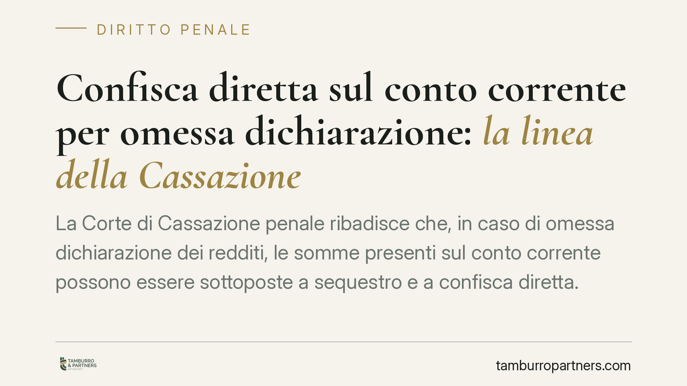

Confisca diretta sul conto corrente per omessa dichiarazione: la linea della Cassazione
La Corte di Cassazione penale ribadisce che, in caso di omessa dichiarazione dei redditi, le somme presenti sul conto corrente possono essere sottoposte a sequestro e a confisca diretta. Sul contribuente grava l'onere di dimostrare che quei fondi non derivano dal risparmio d'imposta. Una pronuncia che incide sulle strategie difensive e sulla gestione della liquidità nel corso del procedimento.

Il caso
La vicenda nasce dalla contestazione del reato di omessa dichiarazione previsto dall'art. 5 del D.lgs. 74/2000 a carico dell'amministratore di fatto di una società (Alfa BV). Il Tribunale di Lecco aveva disposto il sequestro preventivo delle somme presenti sui conti correnti, finalizzato alla successiva confisca del profitto del reato.
La difesa contestava la natura del vincolo, sostenendo che le somme sequestrate non potessero essere considerate profitto "diretto" dell'illecito fiscale. La Cassazione ha respinto l'impostazione, confermando la legittimità della misura.
Inquadramento normativo
La distinzione rilevante è quella tra confisca diretta e confisca per equivalente.
La confisca diretta colpisce il profitto del reato o il bene che ne costituisce il provento. Quando il profitto è una somma di denaro, la giurisprudenza consolidata considera il denaro un bene fungibile: non è necessario dimostrare che le banconote o le movimentazioni sul conto siano "quelle" risparmiate con l'evasione. È sufficiente che sul conto vi sia una disponibilità liquida corrispondente al risparmio d'imposta maturato alla scadenza dell'obbligo dichiarativo.
Questo meccanismo trova fondamento nell'art. 240 c.p. e, in materia tributaria, nell'art. 12-bis del D.lgs. 74/2000, che prevede la confisca del prezzo o del profitto dei reati fiscali. Il sequestro preventivo strumentale alla confisca è disposto ai sensi dell'art. 321 c.p.p.
Il punto decisivo affrontato dalla Corte riguarda l'onere della prova. Poiché il denaro è fungibile, si presume che le somme presenti sul conto al momento della scadenza fiscale costituiscano profitto diretto. Spetta al contribuente dimostrare il contrario: ovvero che i conti fossero incapienti in quel momento, cioè privi di disponibilità riconducibili al risparmio d'imposta.
Implicazioni pratiche
La conseguenza è concreta e immediata. In presenza di una contestazione per omessa dichiarazione, l'indagato non può limitarsi a eccepire la natura per equivalente del sequestro per ottenere garanzie più favorevoli. Se sul conto esistono somme liquide, queste possono essere aggredite in via diretta.
La differenza non è teorica. La confisca per equivalente richiede la prova dell'impossibilità di apprendere il profitto diretto e conosce limiti più stringenti. La confisca diretta, invece, opera in modo più immediato e sposta sul contribuente il compito di provare l'estraneità delle somme.
Per chi amministra una società — anche solo di fatto — il rischio riguarda la liquidità aziendale e personale. Il sequestro può bloccare la disponibilità dei conti nella fase iniziale del procedimento, con effetti sulla continuità operativa.
Rileva anche la posizione dell'amministratore di fatto: la responsabilità penale tributaria prescinde dalla carica formale e segue chi esercita in concreto i poteri di gestione. La misura patrimoniale può quindi colpire chi non figura negli atti societari.
Cosa fare in concreto
- Documentate la provenienza dei fondi. Conservate estratti conto, contratti e giustificativi che permettano di ricostruire l'origine delle somme e di distinguerle dal presunto risparmio d'imposta.
- Verificate la capienza alla data della scadenza fiscale. L'elemento temporale è centrale: raccogliete la documentazione bancaria riferita al momento in cui l'obbligo dichiarativo è venuto a scadere.
- Impugnate tempestivamente il provvedimento. Il sequestro preventivo è soggetto a riesame nei termini di legge. Un intervento rapido consente di sottoporre al giudice la prova dell'incapienza o dell'estraneità delle somme.
- Valutate la posizione dell'amministratore di fatto. Se la contestazione riguarda poteri gestori esercitati in concreto, ricostruite con precisione ruoli e responsabilità effettivi all'interno della società.
- Coordinate difesa penale e profilo tributario. Le vicende del procedimento penale e del contenzioso fiscale si influenzano reciprocamente; consigliamo una gestione integrata delle due dimensioni.
Conclusioni
La pronuncia consolida un orientamento sfavorevole per il contribuente sul piano dell'onere probatorio. La linea difensiva non può prescindere da una ricostruzione documentale accurata della liquidità disponibile e della sua provenienza. La tempestività, in questo contesto, è un fattore determinante.
---
*Contributo informativo a cura di Tamburro & Partners - Avv. Giuseppe Tamburro. Non costituisce parere legale.*
Ogni condominio ha una storia a sé.
Se gestisci un'amministrazione e vuoi un confronto su una specifica questione condominiale, scrivi allo studio. Ti rispondiamo entro un giorno lavorativo.